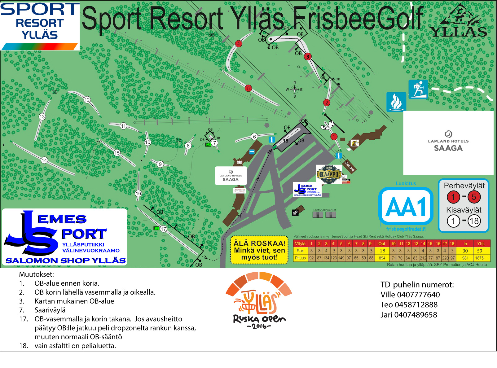
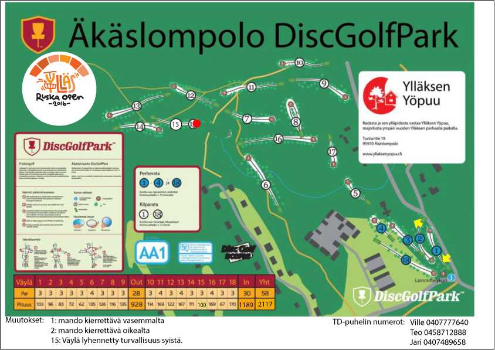

Kirjaudu sisään | Rekisteröidy

Kisakone
Radat - Ylläs Ruska Open
Radat
Ratoja tullaan muokkaamaan hieman kilpailun ajaksi, kilparatojen ratakartat tullaan julkaisemaan tällä sivulla viimeistään viikko ennen kilpailua.
Edit: Ratakartat julkaistu 31.8.
Sport Resort Ylläs (1. ja 3.kierros)
| Ylläsjärven puolella laskettelurinteillä sijaitseva Sport Resort FrisbeeGolf tarjoaa aivan huimia maisemia, isoja korkeuseroja (jopa lähes 50m/väylä) ja pitkiäkin väyliä (pisin 220 m), radan ollessa kuitenkin helpohko yleistuntumaltaan. Rata tarjoaa kuitenkin haastetta siihen, kuka hallitsee harvinaiset korkeuserot. Radan lähtöpaikka sijaitsee Ylläs1 Gondolin ala-aseman lähettyvillä. Rataa tullaan muokkaamaan hieman kilpailun ajaksi. | Klikkaa isommaksi  |
Äkäslomolo DiscGolfPark (2. kierros)
| Äkäslompolo DiscGolfPark taas on erittäin vaativa metsärata josta löytyy, yllätys, yllätys, myös korkeuseroja. Väylät ovat osaltaan suhtellisen pitkiä, kaartuvia ja haastavia. Radan lähtöpaikka sijaitsee Sivulantien ja Kaulavaarantien risteyksessä, lähellä Lapland Hotel Kaltiota. Rata kiertelee monelle hiihtäjälle talvelta tutuissa maisemissa latureittien keskellä. | Klikkaa isommaksi  |
Radat on rakennettu jo muutama vuosi sitten kummankin puolen tunturia talkoovoimin paikallisten yritysten tuella. Kisoja varten on ratoihin tehty mittava uusi investointi, kun molempien ratojen tiiauspaikat saavat päälleen aivan upouuden keinonurmen. Keinonurmen hankintaa (yht 260 m2) on ollut rahoittamassa Kolarin Kunnan Elinkeino- ja Liikuntatoimi ja Ylläksen Matkailuyhdistys. Keinonurmen asennus tapahtuu kesän 2016 aikana talkoovoimin ja paikallisten yritysten avustamana.
Kierrokset 1 ja 3: Ylläs Ruska Open 2016 - Ylläs Sport Resort
Väylät
| # | Kisa# | Par | Pituus (m) |
|---|---|---|---|
| 1 | 3 | 92 | |
| 2 | 3 | 87 | |
| 3 | 4 | 134 | |
| 4 | 3 | 123 | |
| 5 | 3 | 149 | |
| 6 | 3 | 97 | |
| 7 | 3 | 65 | |
| 8 | 3 | 59 | |
| 9 | 3 | 88 | |
| 10 | 3 | 71 | |
| 11 | 3 | 70 | |
| 12 | 3 | 64 | |
| 13 | 3 | 83 | |
| 14 | 4 | 212 | |
| 15 | 3 | 77 | |
| 16 | 3 | 87 | |
| 17 | 4 | 220 | |
| 18 | 3 | 97 |
Kierros 2: Ylläs Ruska Open 2016 - Äkäslompo DGP
Väylät
| # | Kisa# | Par | Pituus (m) |
|---|---|---|---|
| 1 | 3 | 103 | |
| 2 | 3 | 96 | |
| 3 | 3 | 83 | |
| 4 | 3 | 72 | |
| 5 | 3 | 62 | |
| 6 | 4 | 135 | |
| 7 | 3 | 126 | |
| 8 | 3 | 116 | |
| 9 | 3 | 135 | |
| 10 | 3 | 114 | |
| 11 | 4 | 169 | |
| 12 | 3 | 122 | |
| 13 | 4 | 167 | |
| 14 | 3 | 111 | |
| 15 | 3 | 100 | |
| 16 | 4 | 169 | |
| 17 | 3 | 67 | |
| 18 | 3 | 170 |